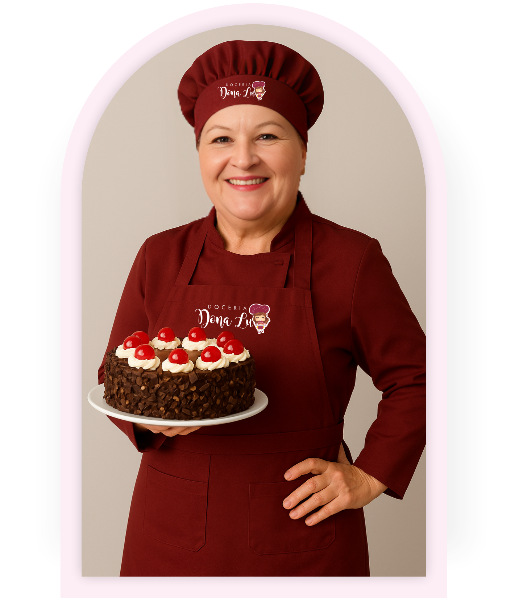
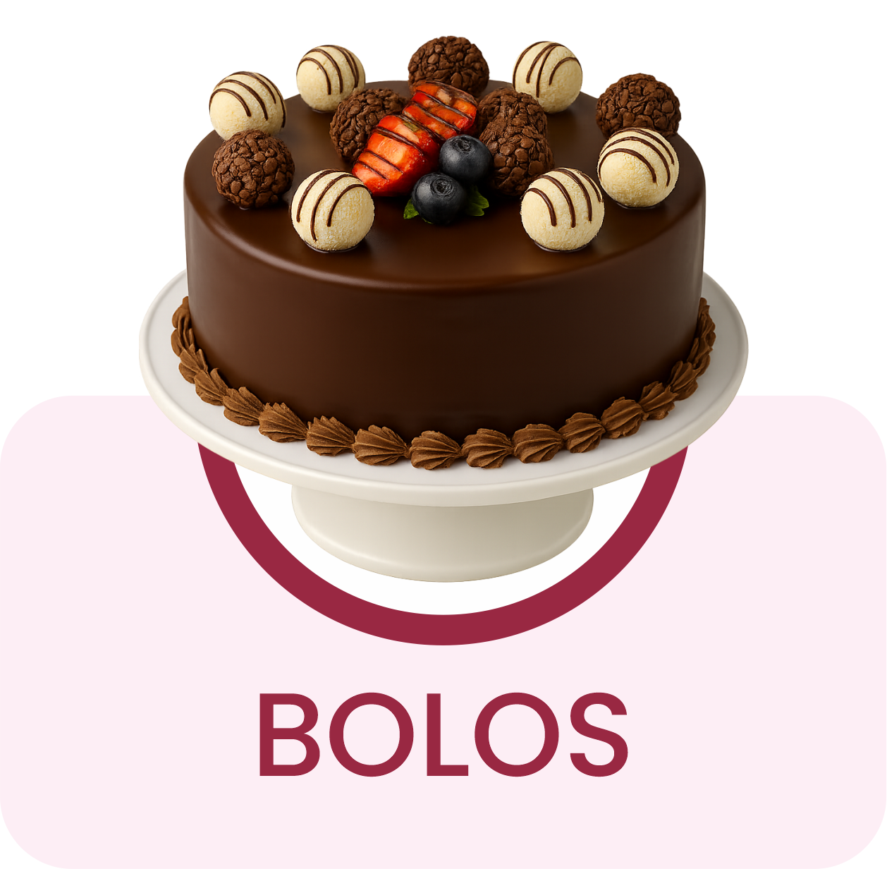
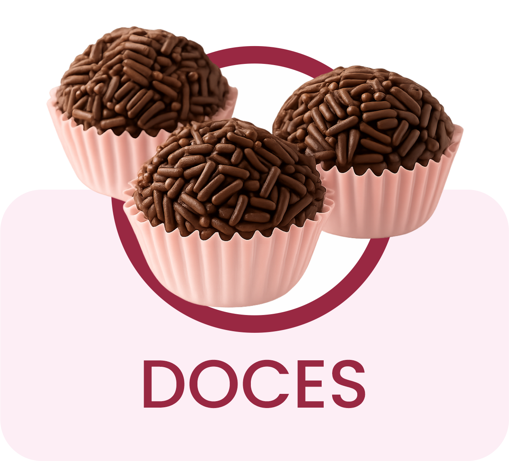
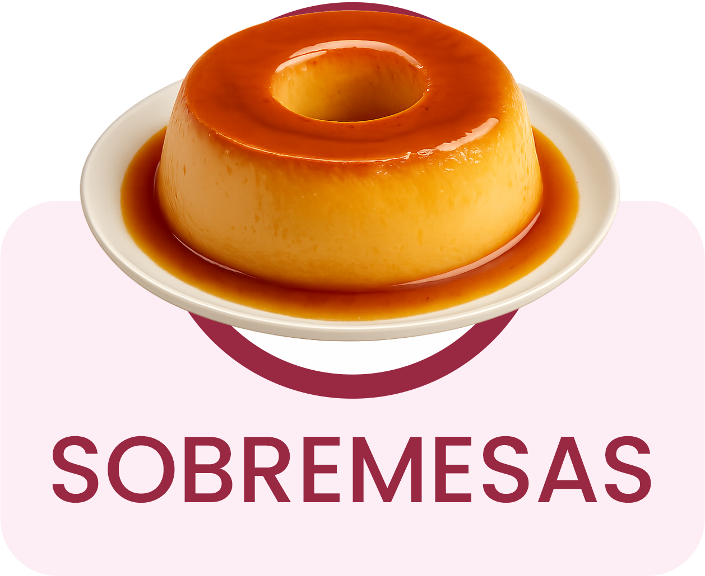
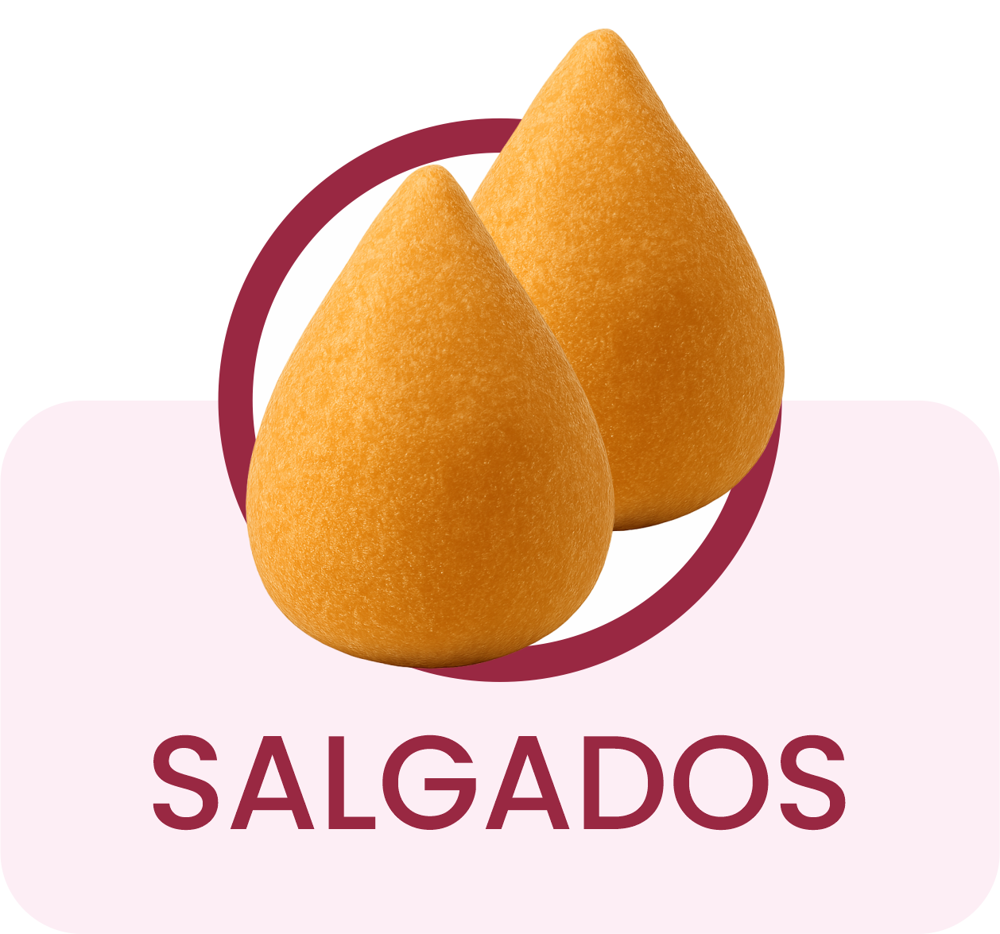
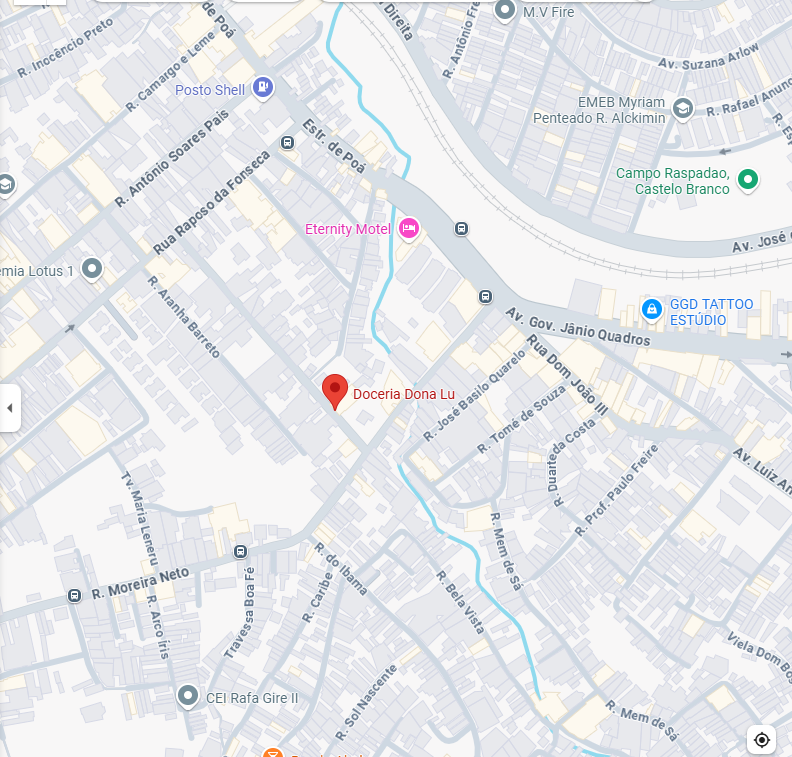

Oferecemos uma seleção cuidadosamente elaborada ou, se preferir, você pode criar um bolo personalizado, feito com todo carinho para tornar sua ocasião ainda mais única.

A Doceria Dona Lu nasceu do amor pela confeitaria e do desejo de transformar momentos simples em memórias doces. Há 9 anos, Dona Lu realiza o sonho de encantar clientes com bolos e sobremesas que carregam sabor, afeto e aquele toque especial de lar. Mais do que um negócio, a doceria é um legado pensado para sua família, um espaço onde cada receita é feita com carinho, atenção aos detalhes e o autêntico sabor de um bolo caseiro. Em um ambiente acolhedor e familiar, a Doceria Dona Lu representa tradição, cuidado e conexão com quem realmente importa.




